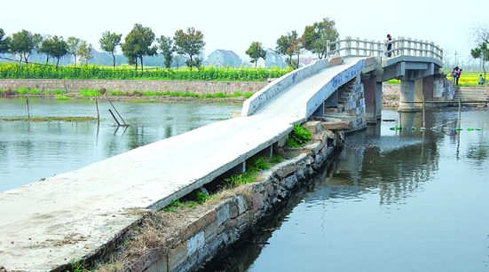

嘉兴市文物保护网 · 市级文物保护单位 · 2014-06-16 · 原文

北溪桥位于嘉兴市秀洲区王江泾镇范滩村7组，坐落在天花荡南至穆溪的入口处。清咸丰、同治年间《新塍琐志》卷三《津梁》有“北溪桥”的记载。民国十二年(1923)《新塍镇志》卷六《津梁》亦有“北溪桥”重修的记载。2004年，桥中孔坍毁，王江泾镇人民政府重修为水泥梁，并在桥面加了护栏。原为五孔梁式石板桥，东西向。现桥全长35.1米，坡长6.1米，宽3米，桥底距水面高3.5米，桥面由4块条石平铺而成，桥柱由3块条石竖置构成，桥身刻有花纹。东西落坡各设石阶11级和8级，上架水泥板。东端延伸出数十米长堤。无桥额、桥联。北溪桥虽破坏严重，但在历史上有较大的影响，留存桥部件对研究古桥梁的建筑工艺有很大帮助，仍具有较高历史和科学价值。1992年公布为嘉兴市级文物保护单位。